План квартиры по фотографиям · эксперимент
Глубина одного фото: MetricAnything и MoGe-2
Что показано
Каждая из 23 фотографий обработана отдельно. Это предсказание видимых поверхностей, а не достроенная комната. Эталонной глубины и камер у образца нет: по этим картинкам нельзя выбрать более точную модель. Пять исходных коллажей разделены вручную; план и смысл имён не использованы.
23исходных фото
46готовых предсказаний
2модели глубины
Для сравнения выбрано одно фото: одинаковая шкала глубины, переключение моделей в 3D с сохранением камеры и масштаба. Маска модели не является оценкой точности; доли сохранённых пикселей приведены в отчёте по фото.
Все фотографии
Нажатие открывает отдельный отчёт по фото.
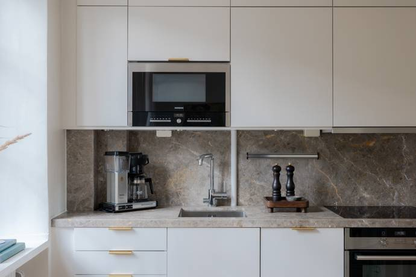
img_1RGB → глубина двух моделей → 3D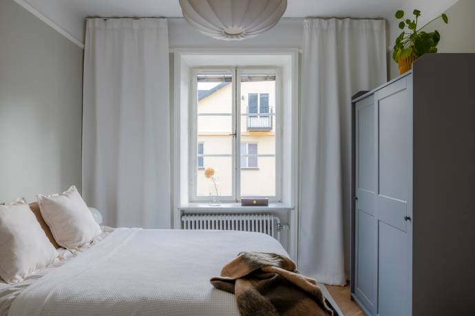
img_10RGB → глубина двух моделей → 3D img_11_aRGB → глубина двух моделей → 3D
img_11_aRGB → глубина двух моделей → 3D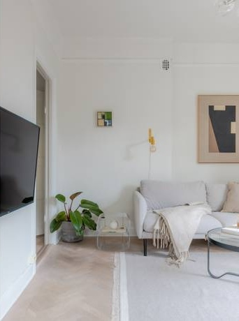
img_11_bRGB → глубина двух моделей → 3D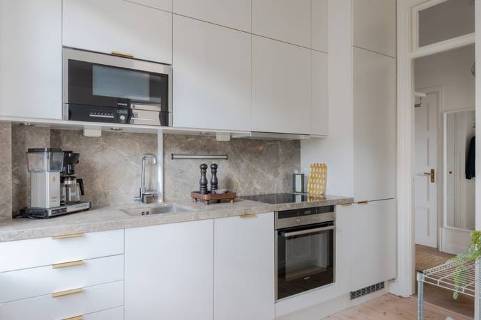
img_12RGB → глубина двух моделей → 3D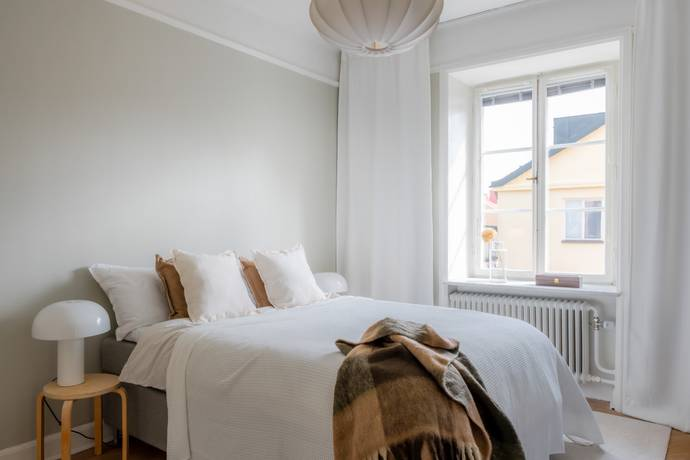
img_13RGB → глубина двух моделей → 3D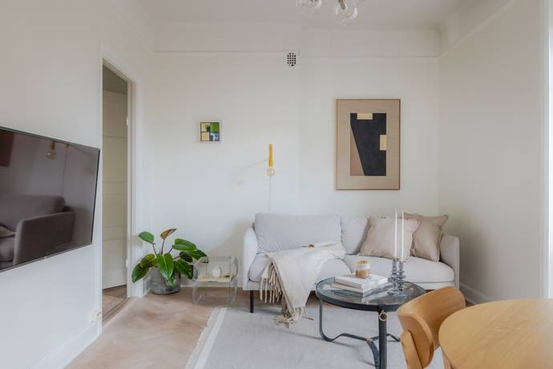
img_14RGB → глубина двух моделей → 3D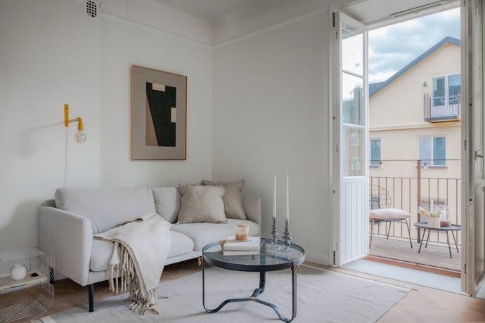
img_15RGB → глубина двух моделей → 3D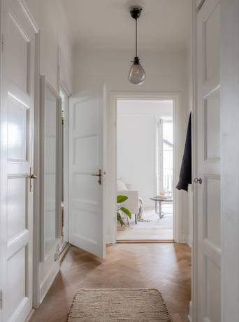
img_16_aRGB → глубина двух моделей → 3D img_16_bRGB → глубина двух моделей → 3D
img_16_bRGB → глубина двух моделей → 3D img_17_aRGB → глубина двух моделей → 3D
img_17_aRGB → глубина двух моделей → 3D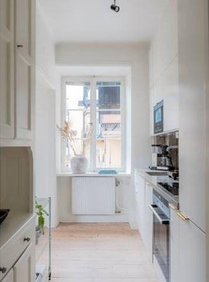
img_17_bRGB → глубина двух моделей → 3D img_18RGB → глубина двух моделей → 3D
img_18RGB → глубина двух моделей → 3D img_2RGB → глубина двух моделей → 3D
img_2RGB → глубина двух моделей → 3D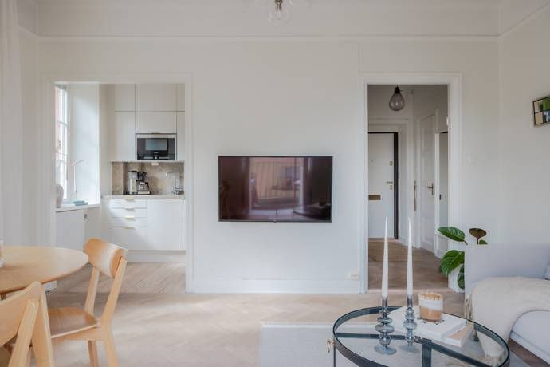
img_3RGB → глубина двух моделей → 3D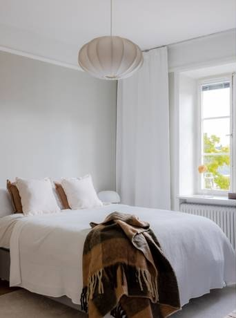
img_4_aRGB → глубина двух моделей → 3D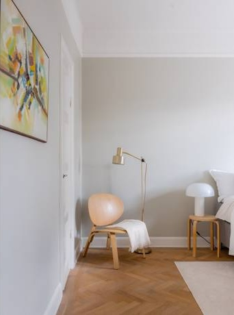
img_4_bRGB → глубина двух моделей → 3D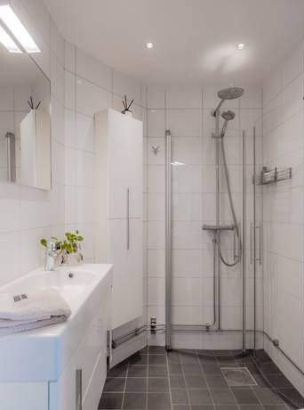
img_5_aRGB → глубина двух моделей → 3D img_5_bRGB → глубина двух моделей → 3D
img_5_bRGB → глубина двух моделей → 3D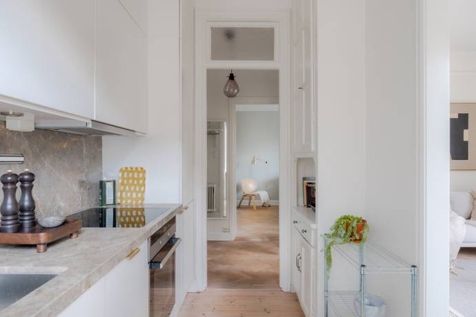
img_6RGB → глубина двух моделей → 3D img_7RGB → глубина двух моделей → 3D
img_7RGB → глубина двух моделей → 3D img_8RGB → глубина двух моделей → 3D
img_8RGB → глубина двух моделей → 3D img_9RGB → глубина двух моделей → 3D
img_9RGB → глубина двух моделей → 3D